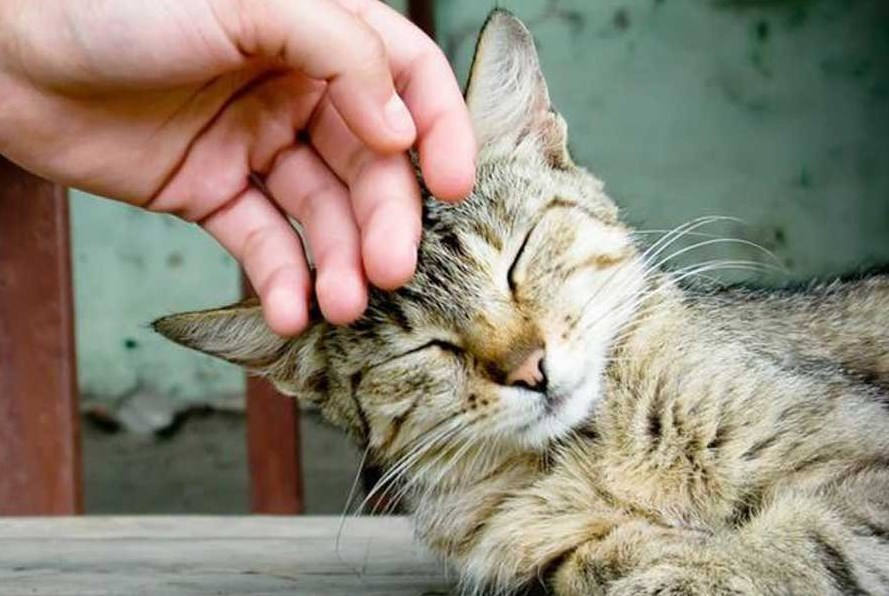

Милые котики
Секрет техники заключается в том, чтобы оставить за котом как можно больше контроля во время взаимодействия. Сколько гладить, как долго, хотят ли они вообще внимания — весь этот выбор должен быть у животного.
Из-за нашей тактильной природы и любви к милым существам, такой подход может не прийти инстинктивно. От некоторых он, вероятно, потребует самоограничения. Но оно может окупиться: исследования показывают, что взаимодействие с кошками будет скорее всего длиться дольше, если кошка, а не человек инициирует его.
Также очень важно уделять пристальное внимание поведению и позе кошки во время взаимодействия, чтобы обеспечить им комфорт. Когда дело доходит до прикосновения, меньше значит больше. Это верно для общения и с , и с другими людьми.
Как общее руководство: большинство дружелюбных кошек будут наслаждаться прикосновениями вокруг областей, где расположены их лицевые железы: основания ушей, под подбородком и вокруг щек. Эти места обычно более предпочтительны по сравнению с такими областями, как их живот, спина и основание хвоста.